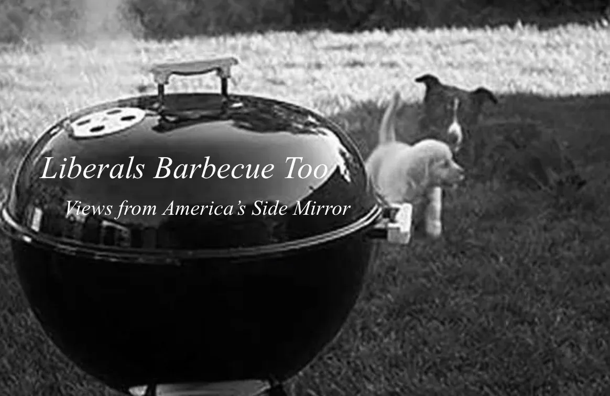
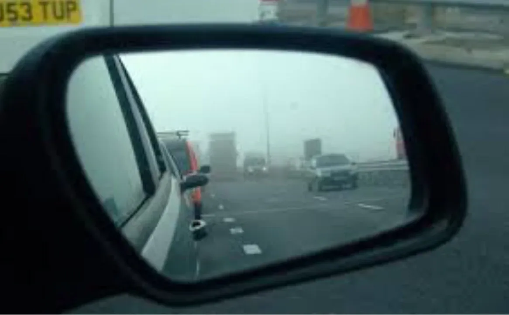
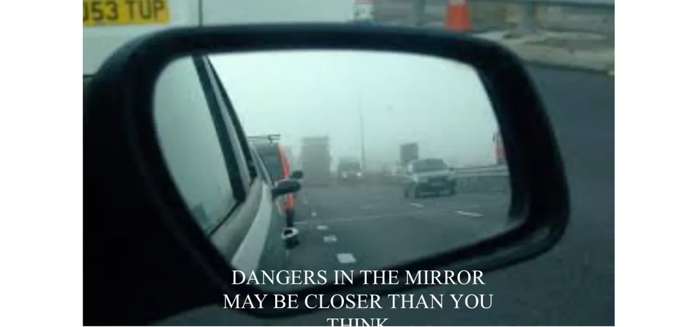

Notes · August 7, 2019
Evidently You Can Sell a Book by Its… Cover!
Designing the cover for Views from the Side Mirror.
Along with the title, the advice from the self-styled self-publishing gurus is the cover is the most important thing. I will say that when I browse in a bookstore, the appeal of a cover is important, will get me to read the blurbs, inside the jacket or on the back cover. That might get me to select a random page to get a feel for the book, but at that point it’s content, not looks, that guide me.
Online, do those little thumbnails affect you, your decision? I’m more inclined to click on something that gives a brief description, like the pop-ups on Netflix. More often than not I’m searching for something specific, based on a book review or recommendation from a fellow-reader.
But now that I’ve gotten the title down -- Views from the Side Mirror: Essaying America – I need to get to the cover.
I have a pretty strong aesthetic sense. The book cover for my novel, A World Between, was driven by a vision I had, of something like the Northern Lights descending on an ocean shore, obscuring what was on the other side, tantalizing in its innate beauty but also sense of danger. I searched around to find the shoreline underlying picture, which I did, somehow, in a home page for a beach town in North Carolina! It had footprints heading to the shore line, and I could visualize how if those footprints ended up in the version of nothing that shrouded the beach, that would be intriguing.
I’m not entirely happy as to how the cover came out – the superimposition of a northern-lights like curtain isn’t entirely integrated – but it does convey some of what I saw in my mind.
Since my first idea for the book title was to play off of one of the more recent essays, Liberals Barbecue Too, my first idea for a cover was to play off that theme, and I found something I liked (I’ve used it with where the article is published on Medium):

I really liked the juxtaposition of the barbecue with the dogs, so very American in feeling, to emphasize the theme that these are articulations of a sensibility every bit as American as any that comes out of the Trump-etian mouth or some fantasy of hinterland America as more real than the people on my West Village block.
But as the Writing 101 dictum goes, kill your darlings.
When I changed the name to Views from the Side Mirror, that cover, while lovely, didn’t make sense. And naturally, a side mirror view seemed pretty organic. So I searched the web for an image that captured that view and could serve as the basis, the undercoat if you like, of the cover. And here’s what I found:

I really liked how this gave the side mirror feel, but also conveyed an urban sense, and the slight fog engulfing the autos was further evocative.
Then I thought I could play around with the standard side-mirror warning, and added this:

That further enhanced the overall feeling I wanted to convey, that we are talking about real issues of import. Many of the essays, written over two decades, are, inho, prescient about our current state(s) of affairs.
So this is as far as I got on my own.
Next, finding a real designer – and big changes!